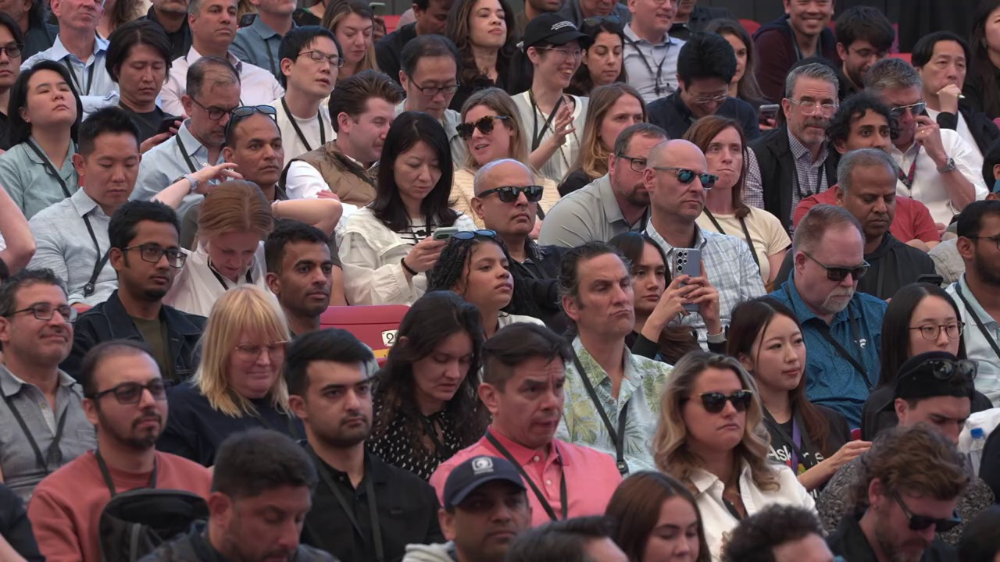
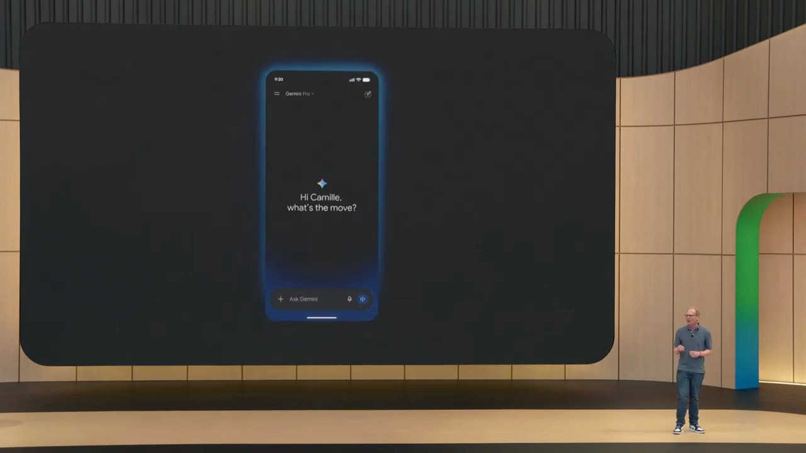
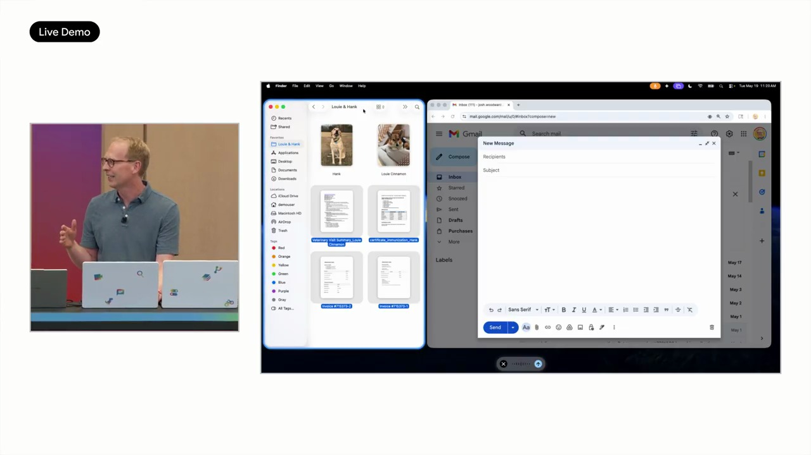
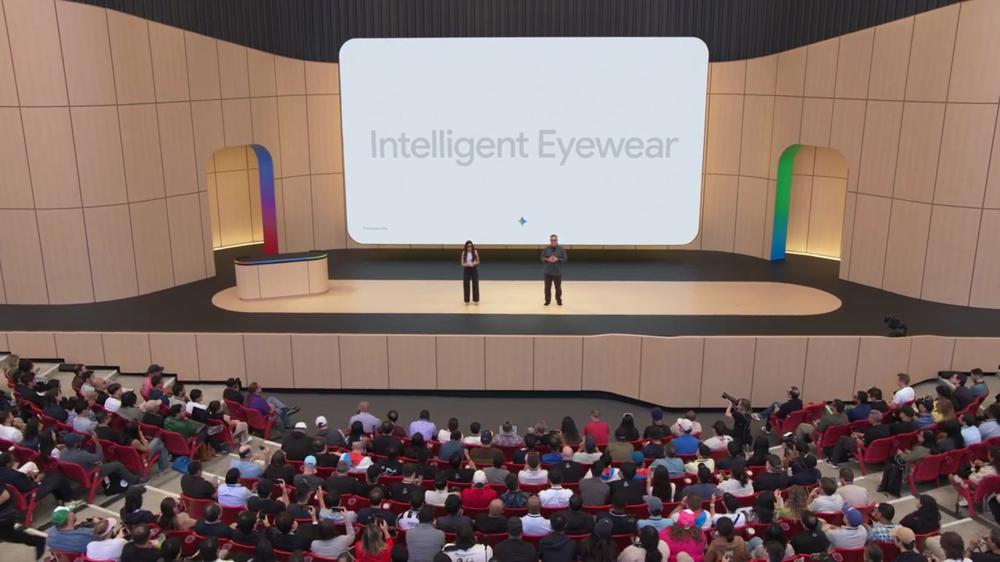
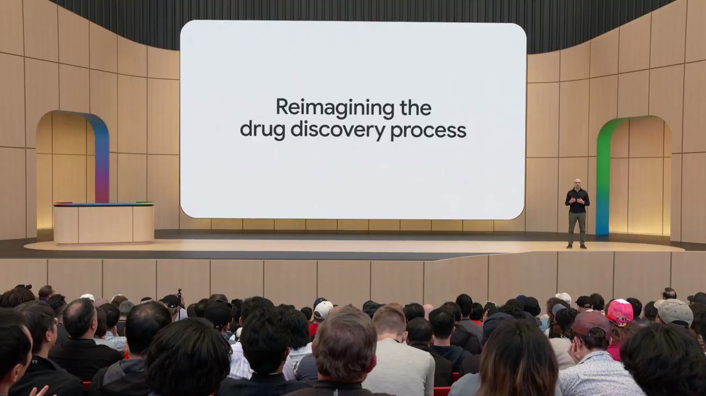

Key Moments







Summary & Script
Google I/O '26 Keynote
Source: https://www.youtube.com/watch?v=wYSncx9zLIU
Video ID: wYSncx9zLIU
Overview
Google’s 2026 I/O keynote, led by Sundar Pichai and featuring DeepMind’s Demis Hassabis, showcased the company’s AI‑first strategy and the rapid expansion of its Gemini models across products. Highlights included staggering growth in AI usage, new Gemini Omni capabilities, major hardware upgrades with the 8th‑generation TPUs, and a suite of AI‑powered features rolling out to Search, Maps, YouTube, Docs, Gmail, and more. The talk underscored Google’s massive infrastructure investment and its vision of AI as a universal problem‑solving tool.
New Features & Announcements
Gemini Omni – A next‑generation multimodal model that can generate videos, images and interactive simulations from any input, demonstrating improved physics reasoning and world‑modeling.
Timeline: Announced at I/O 2026
Availability: Private preview (details not disclosed)Ask YouTube – Conversational search that surfaces the most relevant video segments, provides summaries, tables, and follow‑up Q&A.
Timeline: U.S. rollout summer 2026
Availability: Public previewDocs Live – Real‑time voice‑driven document creation and editing, with AI formatting and content generation.
Timeline: Summer 2026 for Pro/Ultra subscribers; later to Gmail & Keep
Availability: Private preview → PublicAsk Maps – New conversational layer in Google Maps for complex, multi‑step queries (e.g., “find a dress after a pond accident”).
Timeline: Already live (no specific date)
Availability: GeneralTPU‑8t & TPU‑8i – 8th‑generation Tensor Processing Units: 8t for training (≈3× power of prior gen) and 8i for inference (≈1,500 tokens/sec, 2× performance‑per‑watt).
Timeline: Announced at Cloud Next 2026, shipping later 2026
Availability: General for Google Cloud customersPersonal Intelligence (Gemini app) – Customized, context‑aware AI responses that adapt to individual user needs.
Timeline: Already in Gemini app, scaling rapidly
Availability: General
Topics Covered
- AI‑first transformation – Ten years since Google’s AI‑first pivot; full‑stack approach from custom silicon to end‑user products.
- Massive usage growth – Tokens processed rose from 9.7 trillion/mo (2021) → 3.2 quadrillion/mo (2024); 8.5 M developers building with Gemini APIs; 13 products surpass 1 B users each.
- Search & Gemini app expansion – AI Overviews at 2.5 B monthly users; Gemini app grew from 400 M to 900 M MAUs in one year.
- Product‑level AI integrations – Search (AI Mode), Maps (Ask Maps), YouTube (Ask YouTube), Docs/Drive (Docs Live), Gmail/Keep (voice AI).
- Hardware investments – CapEx jump to ~$180 B; introduction of dual‑chip TPU 8t/8i and distributed training via JAX + Pathways across >1 M TPUs worldwide.
- World models & AGI roadmap – Demis Hassabis presented Gemini Omni as a step toward Artificial General Intelligence, highlighting realistic media generation and physical reasoning.
- Developer & enterprise ecosystem – 375+ customers each processing >1 T tokens/month; emphasis on scaling infrastructure for both consumer and enterprise workloads.
Key Takeaways
- Google’s AI ecosystem is now a core growth engine, with quadrillion‑scale token processing and billions of active users across AI‑enhanced products.
- Gemini models, especially the new Omni variant, are expanding AI from text to realistic multimodal world simulation, moving closer to AGI.
- The 8th‑generation TPUs dramatically boost training speed and inference latency while improving energy efficiency, underpinning the rapid model iteration.
- Conversational AI is being embedded deeply into Search, Maps, YouTube, Docs, Gmail, and Keep, turning traditional queries into ongoing dialogues.
- Infrastructure spending has surged to ~$190 B, reflecting Google’s commitment to maintain leadership in AI hardware and cloud services.
- Developers are a critical engine of growth, with millions building on Gemini APIs and enterprise customers demanding trillion‑token workloads.
Notable Quotes
- “It’s been a period of hyper‑progress… we’re taking a differentiated, full‑stack approach to AI innovation.” – Sundar Pichai
- “Never imagined I would say quadrillion in an I/O keynote, but here we are.” – Sundar Pichai
- “AI Overviews now has over 2.5 billion monthly users… our biggest upgrade to Search ever.” – Sundar Pichai
- “Gemini Omni… can create anything from any input… a step‑change in simulating kinetic energy and gravity.” – Demis Hassabis
- “If you learn anything in 27 years of working on Search, it’s that latency matters.” – Sundar Pichai
This summary reflects the major announcements and themes from the Google I/O ’26 keynote.
Podcast Script
JORDAN: Welcome to Episode 17 of SlackCasts by PodSlacker — where AI does the watching so you can do the listening. If you want a richer experience with today's episode, visit PodSlacker dot com slash SlackCasts — you'll find a written summary, key frame moments from the video, and an interactive AI chat to explore the topic as deep as you like. Now let's get into it.
MIKE: 2026 I/O was a marathon, not a sprint. Sundar framed the whole event around an “AI‑first” transformation that’s now ten years old, and the numbers he threw at us were mind‑blowing—quadrillion‑scale token processing and billions of active users across AI‑infused products.
JORDAN: Right, the token metric jumped from 9.7 trillion per month in 2021 to 3.2 quadrillion today—a 330‑fold increase. That tells us the underlying infrastructure is finally catching up to the demand, especially with the new TPU‑8t and 8i chips.
MIKE: Speaking of chips, the dual‑chip approach is a strategic pivot. 8t boosts pre‑training compute by roughly three times, while 8i hits 1,500 tokens per second on inference, cutting latency in half for Search and Maps. That’s a direct win for user experience.
JORDAN: And the energy side can’t be ignored—both chips deliver up to 2× performance‑per‑watt. Given Google’s capex now hovering near $190 B, the efficiency gains translate into massive cost savings at scale.
MIKE: Let’s drill into the product layer. Search’s AI Overviews now serve 2.5 billion monthly users, and AI Mode has crossed the 1 billion‑user threshold in a single year. That’s the biggest upgrade to Search ever, according to Sundar.
JORDAN: The shift from isolated queries to ongoing conversations is baked into the UI. The model retains context, surfaces follow‑up answers, and even surfaces tables when you ask for comparisons. Latency matters, and the new TPU‑8i makes that feasible at web scale.
MIKE: Maps got its biggest upgrade in a decade with Ask Maps. The demo—finding a dress after a pond accident—showed how the system can chain multiple sub‑tasks: location, inventory, and time constraints, all in a single natural language request.
JORDAN: Ask Maps is now live globally, which means the underlying multimodal reasoning is already in production. It leverages the same Gemini backbone that powers the Gemini app’s Personal Intelligence layer, customizing responses based on a user’s history and preferences.
MIKE: On the video front, Ask YouTube is rolling out in a U.S. public preview this summer. The key differentiator isn’t just search; it’s segment‑level retrieval, summarization, and the ability to continue a dialogue about the video content.
JORDAN: The demo showed a parent asking how to teach a 3‑year‑old to ride a bike, getting a curated list of video snippets, then drilling down to hand‑brake versus pedal‑brake advice—all without leaving the chat interface. That’s a classic example of “search‑plus‑conversation.”
MIKE: Docs Live takes the voice‑first paradigm to the next level. Instead of typing a prompt, you can dictate a whole brief, pull in context from Drive, and get a formatted, AI‑generated document in real time.
JORDAN: The live demo highlighted dynamic table generation and inline styling, all driven by Gemini’s multimodal understanding. It’s currently a private preview for Pro and Ultra subscribers, with Gmail and Keep slated to inherit the same voice engine later this year.
MIKE: The Gemini app itself is a micro‑ecosystem now—900 million MAUs, up from 400 million last year, and daily token requests up sevenfold. Personal Intelligence adds a per‑user context layer, making the model act more like a personal assistant than a generic chatbot.
JORDAN: That personal layer is powered by the same Omni model that Demis Hassabis introduced. Gemini Omni is a multimodal world model that can generate videos, images, and even interactive simulations from arbitrary prompts, with a noticeable grasp of physics—kinetic energy, gravity, you name it.
MIKE: Hassabis framed Omni as a concrete step toward AGI, emphasizing its ability to “simulate reality.” The demo of a clay‑mation explainer on protein folding was less about aesthetics and more about the model’s internal world representation.
JORDAN: Note the pipeline: Omni feeds into product‑level features like Ask YouTube and Docs Live, while the underlying training runs on a distributed JAX + Pathways stack across more than a million TPUs worldwide. Training cycles that used to take months now finish in weeks.
MIKE: From a developer perspective, the Gemini APIs now serve 19 billion tokens per minute, with 8.5 million monthly active developers building on top. That’s a huge shift from the early days of AI‑as‑a‑service.
JORDAN: Enterprise customers are also scaling—375+ clients each processing over a trillion tokens per month. The hardware and software stack can handle both consumer‑scale latency requirements and bulk inferencing workloads.
MIKE: All of this hardware, software, and product integration dovetails into Google’s broader AI‑first narrative: AI isn’t a feature layer; it’s the operating system of every Google product. That’s why the investment in custom silicon is justified despite the $180‑$190 B capex spike.
JORDAN: And it’s not just raw compute. The TPU‑8t’s threefold power boost is paired with Pathways’ ability to shard a training job across geographically distributed pods, effectively creating a single logical cluster of over a million TPUs. That’s unprecedented scale.
MIKE: Let’s pull back to the strategic implications. With AI Overviews hitting 2.5 billion users, Google now captures a larger share of the “search‑plus‑AI” market than any competitor. The network effect of billions of users feeding back into model improvement accelerates the virtuous cycle.
JORDAN: Exactly. The token growth curve is both a leading indicator of usage and a feedback loop for model refinement. More tokens = more data for fine‑tuning, which yields better products, which drives even more token consumption.
MIKE: The new features—Omni, Ask YouTube, Docs Live, Ask Maps—are all manifestations of that loop. Each one expands the modality frontier, turning text‑only interactions into video, voice, and simulation.
JORDAN: And the AGI roadmap is now visible: world models → multimodal simulation → autonomous agents that can plan and act. Omni is the first concrete artifact on that path, and the hardware stack is already in place to iterate rapidly.
MIKE: From a senior practitioner’s lens, the biggest takeaway is confidence in latency‑critical AI at scale. If you can deliver a 1,500‑token‑per‑second response in Search, you can embed similar capabilities in any latency‑sensitive workflow.
JORDAN: And the energy efficiency gains mean those workloads are sustainable at global scale, which is increasingly a hard requirement for enterprises concerned about carbon footprints.
MIKE: For product teams, the message is clear: AI‑first isn’t a future promise; it’s a present reality across the entire Google stack, and the APIs are open for you to embed.
JORDAN: For infrastructure teams, the dual‑chip TPU strategy shows that separating training and inference silicon can unlock both performance and efficiency—a model other cloud providers may soon emulate.
MIKE: And for strategists, the sheer magnitude of token processing and user adoption signals that AI has become the primary growth engine for Google, outpacing traditional ad‑based metrics.
JORDAN: To close, let’s recap the concrete takeaways: quadrillion‑scale token processing, 8t/8i TPU launch, Gemini Omni as a multimodal world model, conversational layers in Search, Maps, YouTube, Docs, and a $190 B capex commitment underwriting the whole stack.
MIKE: Those are the levers that will shape the AI landscape for the next several years—hardware, models, and product integration moving in lockstep. That’s a wrap on today’s SlackCast. Head over to PodSlacker dot com slash SlackCasts for the written summary, visual key moments, and an AI chat to dive even deeper into today's topic. Until next time — slack off smarter.